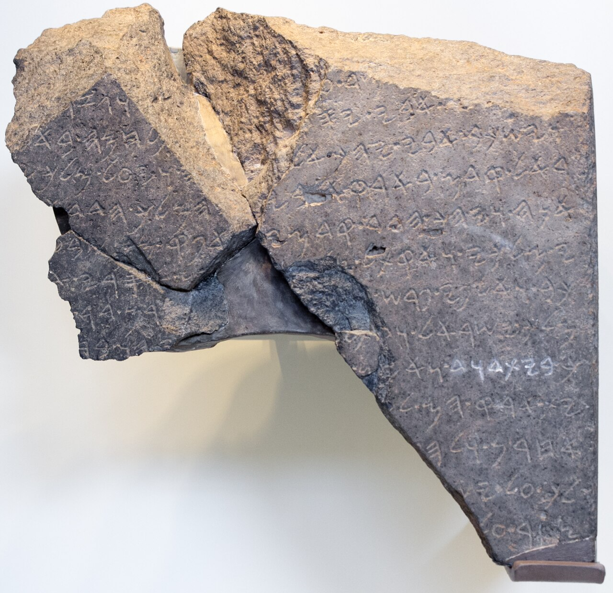

Tel Dan Stele (House of David)

- Find Name
- Tel Dan Stele (House of David)
- Historical Period
- Iron Age II
- Artifact Date
- c. 840 BC
- Date Discovered
- 1993
- Discovery Location
- Tel Dan, northern Israel
- Current Location
- Israel Museum, Jerusalem
- Timeline Era
- Divided Monarchy
- Description
- A basalt victory stele in Aramaic, set up by an Aramean king (most likely Hazael of Damascus) boasting of victory over Israel and Judah. Its fragments were reused in a wall at Tel Dan and reassembled after discovery.
- Biblical Significance
- The stele contains the phrase 'House of David' (bytdwd), the earliest extra-biblical reference to David as founder of Judah's royal line. For readers who anchor hope in God's promise to David, it is a stone witness that David was a real king whose house neighbouring nations knew by name.
- Evidence Class
- Direct
- Interpretations
- Scholars agree the phrase reads ‘House of David’ and dates to the 9th century BC; debate centers on the stele’s author (most often Hazael of Damascus) and which kings’ deaths it boasts of.
- Scripture Illuminated
- Related People
- Related Books
- Related Events
Awaiting Review Not yet checked against scholarly sources. Treat its claims as provisional until this entry is reviewed. About verification
Last reviewed: not yet reviewed